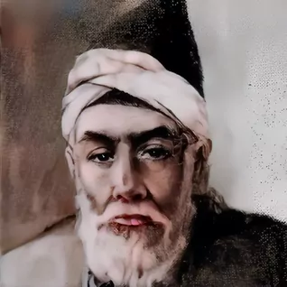

در میان شاعران عصر قاجار، کمتر کسی توانسته است همچون میرزا عباس فروغی بسطامی، عطر و بوی غزلهای کلاسیک سبک عراقی را با زبانی ساده و روان بازآفرینی کند. او که به حق لقب «سعدی ثانی» را به خاطر لطافت کلام و شیوایی بیانش از آن خود کرده، جایگاهی ویژه در تاریخ ادبیات ایران دارد.
فروغی بسطامی (۱۲۱۳ - ۱۲۷۴ ه.ق) در بسطام زاده شد و دوران جوانی و شکوفایی هنری خود را در تهران و در دربار قاجار گذراند. او به دلیل داشتن طبعی لطیف و تسلط بر موسیقی و شعر، به سرعت مورد توجه شاهان قاجار (بهویژه محمدشاه و ناصرالدینشاه) قرار گرفت و به یکی از شاعران پرآوازه عصر خود بدل شد.
راز ماندگاری فروغی در «سهل و ممتنع» بودن شعر اوست. اگر به دنبال دلایل تمایز او هستید، این ویژگیها کلیدی است:
سادگیِ خیالانگیز:
او برخلاف برخی شاعران همعصر خود که به سمت پیچیدگیهای تکلفآمیز رفته بودند، به زبان محاوره و رایج زمانه نزدیک شد، اما با این حال در کلامش عمق ادبی حفظ شده است.
شور و سوز عاشقانه: دیوان فروغی، آیینه تمامنمای عشق است. او غزل را نه به عنوان ابزاری برای مداحی، بلکه به عنوان محمل خالصِ احساسات عاشقانه به کار میبرد.
تأثیرپذیری از بزرگان: او با مطالعه دقیق آثار سعدی، حافظ و صائب، توانست سبک عاشقانه سعدی را با اندکی رنگوبویِ متأخر پیوند بزند
شاید هیچ چیز بهتر از یک بیت از او، سبک و سیاقش را نشان ندهد:
> «بگردید و بگردید و بگردید
> در این شهر که یک یار نداریم»
>
> یا بیت مشهورتر:
> «به یاد زلف تو افتادم و باز
> دلم از بندِ غم آزاد گشت»
در دنیای امروز که اغلب با پیچیدگیهای ذهنی درگیر هستیم، غزلهای فروغی بسطامی همچون نسیمی خنک، آرامبخش و صریح هستند. او شاعر «احساساتِ بیواسطه» است.
اگر به دنبال معنا کردن عشق در سادهترین و در عین حال زیباترین کلمات هستید، فروغی بسطامی بهترین همراه شماست.